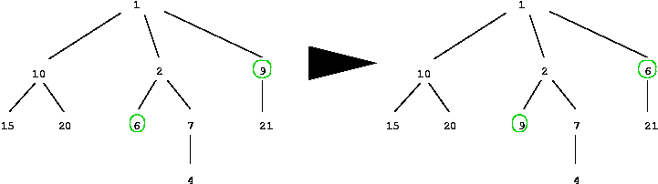
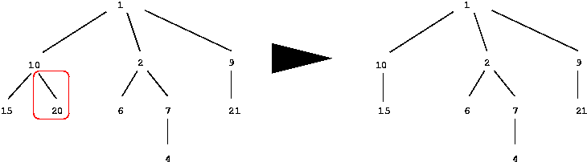

A tree is an almost well-balanced tree if at each node the depths
of the subtrees rooted at its children are the same or
differ at most by 1. The depth of a tree is 1 if the tree is a
single leaf, or 1 plus the maximum of the depths of subtrees
rooted at the children of its root.
Write a program that, given two (non empty) trees A and B whose
nodes contain positive integers, checks that A is
almost wellbalanced and that B can be obtained from A by applying
only once one of the following operations:
- interchange the integers of two nodes;
- delete one leaf.
The following pictures illustrate each of these operations. In the
first one, the circled nodes have their integers
exchanged. In the second, the marked leaf is deleted. Note that
your program will apply only one of the operations
and only once.


The input begins with a single positive integer on a line by itself indicating
the number of the cases following, each of them as described below.
This line is followed by a blank line, and there is also a blank line between
two consecutive inputs.
Assume each tree is given as follows: the integer in its root,
the number of children of its root, and each subtree
rooted at them from left to right. Every node in A has a unique
integer (integers are not repeated) and the set of
integers appearing in nodes of B is contained in, or is equal
to the corresponding set of A.
For each test case, the output must follow the description below.
The outputs of two consecutive cases will be separated by a blank line.
The output of the program should be a line (ended by newline and
having integers separated by a single space character)
with one of:
- -1, if the given data does not correspond to the specification
of the two trees as described above (i.e., your
program must check whether it is possible to build a tree from
the given numbers, and whether the conditions
on the integers are verified);
- 0, if first tree is not almost well-balanced;
- otherwise, 1 followed by either:
- 0 if the second tree cannot be obtained from the first by
the method above; or,
- the two integers to be interchanged if the first operation
above applies, written in increasing order; or,
- minus the integer of the leaf to be deleted, if the second operation applies.
1
1 3 10 2 15 0 20 0 2 2 6 0 7 1 4 0 9 1 21 0
1 3 10 2 15 0 20 0 2 2 9 0 7 1 4 0 6 1 21 0
1 6 9
Miguel Filgueiras, MIUP'2001